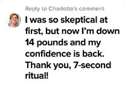
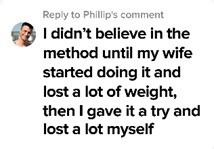
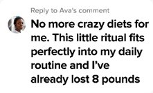
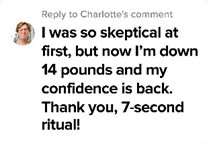
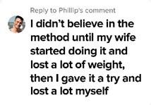
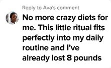

I Transformed My Body with This Bizarre 7-Second
By Laura Bennett. 38 from Charlotte, North Carolina

"How I Finally Lost Weight, Took Care of My Health, and Found Balance... All with a Simple 7-Second Ritual!"
I was always the woman trying to do it all. Working outside the home, taking care of the kids, the house, and my husband. Between responsibilities and daily stress, taking care of my body was the last thing I could manage. I had tried every diet, but nothing worked for me.
Waking up exhausted and frustrated by the reflection in the mirror became my daily routine. How could I dedicate so much to everyone else but never find time for myself?
Then I discovered a simple 7-second ritual that changed everything. It activates enzymes in the body and surprisingly accelerates metabolism. I no longer needed to kill myself at the gym or follow restrictive diets. In no time, I began to see the difference: my body transformed, the stubborn fat melted away, and I finally felt in control again.
Today, I’m more confident, have more energy for my family, and, best of all, I love what I see in the mirror.
If you relate to this journey, know there’s a way out. Click here to discover how this 7-second ritual can transform your life too.

.gif)
 




